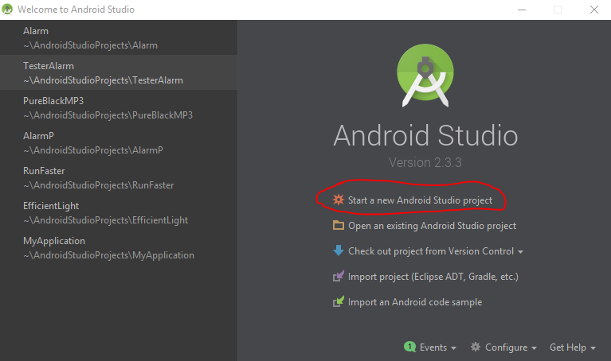
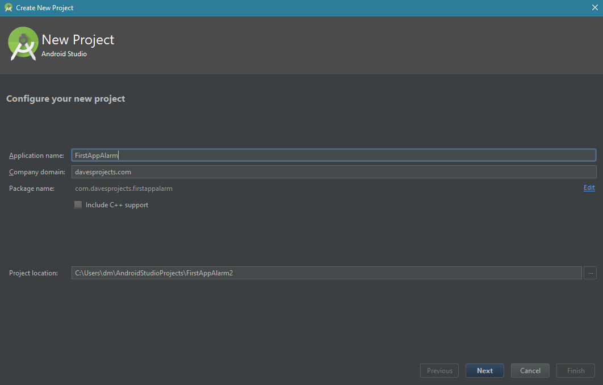
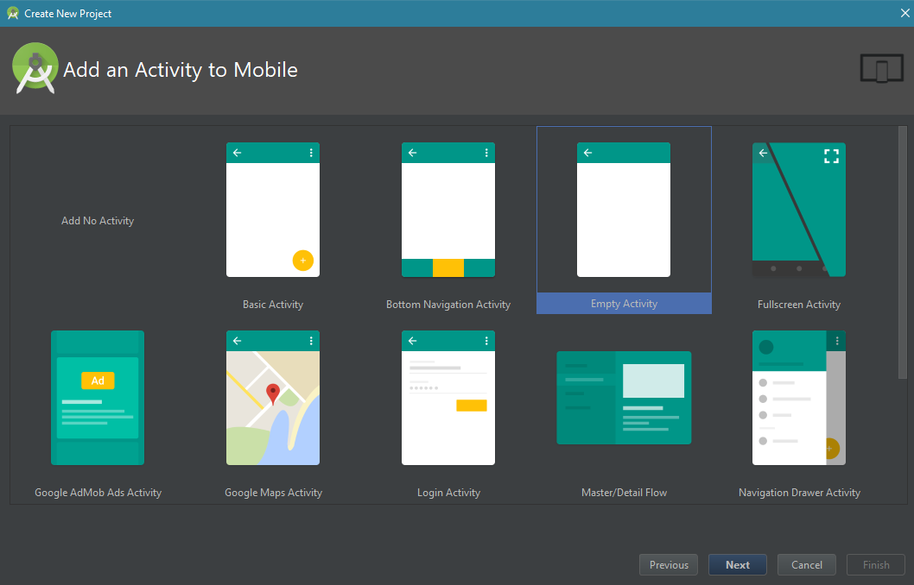
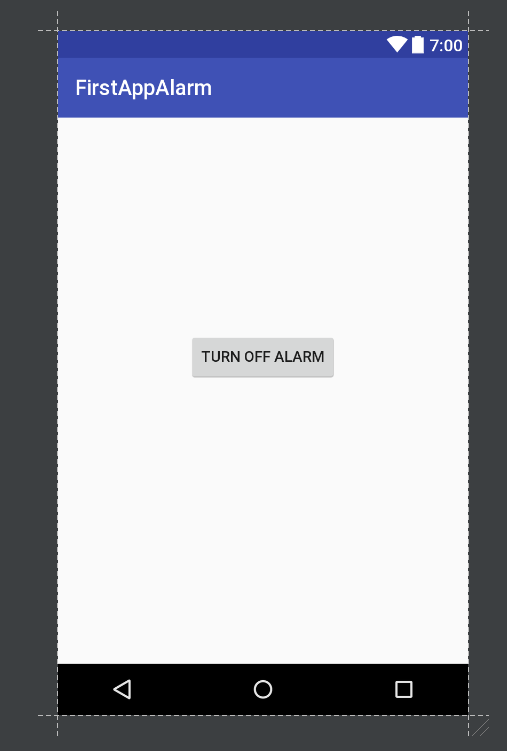

Practical Android Development Series - Part 1
Welcome to the Practical Android Development Series! The goal of this series is to learn android development by creating 4 apps. The apps are an alarm, a flashlight, a sprint counter, and an audio player.
Many people start their day off with an alarm, so we’ll start this series off with an alarm too. Our Alarm clock will be simple yet functional. The user will be able to use an on-screen clock to set the alarm. Once the alarm goes off, the user will able to turn off the alarm ringer. It won’t be fancy, but it will be something you can use every day.
The first step to android development is to download Android Studio at the link below.
https://developer.android.com/studio/index.htmlAndroid Studio was created by Google and Jet Brains specifically for android development. Fortunately, it works on Windows, OS X, and GNU/Linux. The link above provides the most up to date installation methods. For Windows, it’s a normal installation procedure.
Once you’ve installed Android Studio, open it up and you should see a screen like the image below. Click “Start a new Android Studio project”.
Next you should see screen like the next image.
Type “FirstAppAlarm” for Application name. For Company domain, type in whatever you want. I would recommend changing it from the default option. The reason is because apps with the default company domain can’t be uploaded to the Google Play Store. You can change the company domain later. It’s not hard, just time consuming. If you have a website, typing in the website name would be a good choice.
The default selections for “Target Android Devices” are fine.
On the next screen, select Empty Activity.
Then click Finish on the next screen.
Finally, we’re into Android Studio, you should see a screen that is like the first or second image. Either way, click on activity_main.xml under the folder res/layout/


Android apps use XML (Extensible Mark Up Language) for the user interface. Android Studio offers a drag ‘n drop editor and a XML based text editor. To switch between the two, click on the tabs near the bottom of Android Studio that say “Design” and “Text”. Personally, I like to use the drag ‘n drop interface to drag the components onto the screen that I need. Then, I use the XML file to modify and layout the components.
You should see a small section called Palette near the top left of Android Studio. Use the Palette to drag 2 Buttons onto the screen. Then, drag on 1 TextView. Finally, drag on 1 TimePicker. You can click on the Palette and begin typing to quickly search for the components you’re looking for.

Now click on the Text tab to get to the XML file. Go ahead and copy and paste the code below into the XML file. Make sure you change line 8 to reflect your package name.
<?xml version="1.0" encoding="utf-8"?>
<LinearLayout xmlns:android="http://schemas.android.com/apk/res/android"
xmlns:app="http://schemas.android.com/apk/res-auto"
xmlns:tools="http://schemas.android.com/tools"
android:layout_width="match_parent"
android:layout_height="match_parent"
android:orientation="vertical"
tools:context="com.davesprojects.firstappalarm.MainActivity">
<TimePicker
android:layout_gravity="center"
android:id="@+id/timePicker"
android:layout_width="wrap_content"
android:layout_height="wrap_content" />
<LinearLayout
android:layout_marginTop="20dp"
android:layout_gravity="center_horizontal"
android:layout_width="wrap_content"
android:layout_height="wrap_content">
<Button
android:layout_marginRight="10dp"
android:id="@+id/buttonOn"
android:layout_width="wrap_content"
android:layout_height="wrap_content"
android:text="Turn On" />
<Button
android:layout_marginLeft="10dp"
android:id="@+id/buttonOff"
android:layout_width="wrap_content"
android:layout_height="wrap_content"
android:text="Turn Off" />
</LinearLayout>
<TextView
android:layout_marginTop="20dp"
android:layout_gravity="center_horizontal"
android:id="@+id/textViewStat"
android:layout_width="wrap_content"
android:layout_height="wrap_content"
android:text="Alarm is off" />
</LinearLayout>
The XML above contains several changes from the original XML. The first is the deletion of the Hello World TextView. The next is we changed to a LinearLayout (see line 2). A LinearLayout is generally the simplest layout to work with. As the name suggests, components are laid out in a straight line. The orientation can be vertical or horizontal. In addition, you can put one LinearLayout inside of another.
As you can see on line 17, we create a horizontal LinearLayout inside of the overall vertical LinearLayout from line 2.
You may have noticed that each component has at least 2 attributes – android:layout_width and android:layout_height. These attributes can be set to specific lengths such as 20dp or be given the values match_parent or wrap_content. Match_parent will cause the component to take up as much space as its parent view while wrap_content will take as much space needed to show the component. It’s hard to put into words. Try briefly changing TimePicker’s layout_height to match parent. The 2 Buttons and TextView should disappear. This is because TimePicker is taking up all the vertical space provided from the vertical LinearLayout which is most of the screen. This leaves no space left for the other components.
The next big change is the addition of the attribute layout_gravity to TimePicker, the horizontal LinearLayout, and the TextView. It’s good to think of layout_gravity as left, center, or right align in a word editing program. Try changing the gravity to left or right to get a better feel for how it effects the components.
There are also two layout_marginTop attributes. These attributes just add some extra spacing in between your components. The final Layout (from the XML shown above) should look like the image below

Notice the Preview tab on the right side of Android Studio. You can use it to toggle the on screen preview. Defining Android Layouts (and user interfaces in general) is an art. It takes time and practice. Don’t worry if it doesn’t make much sense right now. As we continue through the series, it will start to make more sense. Right now, we’re trying to build our first app to build up some momentum.
It’s time to get into some Java programming. Before you begin, ensure you have some coffee. You can’t effectively program in Java without getting some Java in yourself first. Yes, this series will contain terrible jokes and puns. Deal with it.
You should see a java folder on the right side of the screen. Under java, you should see another folder with your package name. Your package name is a combination of your app name and complain domain. Click on that folder to find and open your MainActivity.java file.
You should see some java code like what’s shown below.
package com.davesprojects.firstappalarm;
import android.support.v7.app.AppCompatActivity;
import android.os.Bundle;
public class MainActivity extends AppCompatActivity {
@Override
protected void onCreate(Bundle savedInstanceState) {
super.onCreate(savedInstanceState);
setContentView(R.layout.activity_main);
}
}
For now, take note that MainActivity is a class that extends AppCompatActivity. This means that our MainActivity class can use methods from the AppCompatActivity class. AppCompatActivity is a base class that provides the basic functions of an app. By the way, what’s an Activity?
From the Android Documentation, an Activity is a “single, focused thing that the user can do. Almost all activities interact with the user, so the Activity class takes care of creating a window for you in which you can place your UI with setContentView(View)”
For most intents and purposes, an activity is just one screen in your app. One app can have several activities which means it will have several screens. For example, our app will have its default screen as the layout defined in activity_main.xml. Later, we will create a WakeUp activity. This activity will show a new screen whenever the alarm goes off.
Replace the code in MainActivity with the code below and pay special attention to the comments. In java comments are preceded by //. You can also create multi line comments using /* */.
package com.davesprojects.firstappalarm;
import android.app.AlarmManager;
import android.app.PendingIntent;
import android.content.Context;
import android.content.Intent;
import android.content.SharedPreferences;
import android.os.Build;
import android.support.v7.app.AppCompatActivity;
import android.os.Bundle;
import android.view.View;
import android.widget.Button; // alt-enter to import
import android.widget.TextView;
import android.widget.TimePicker;
import java.util.Calendar;
public class MainActivity extends AppCompatActivity {
// declare fields
Button buttonOn, buttonOff;
TextView textViewStat;
TimePicker timePicker;
AlarmManager alarmManager;
PendingIntent pendingIntent; // needs to be accessed from more than just one method
@Override
protected void onCreate(Bundle savedInstanceState) {
super.onCreate(savedInstanceState);
setContentView(R.layout.activity_main);
buttonOn = (Button) findViewById(R.id.buttonOn);
buttonOff = (Button) findViewById(R.id.buttonOff); // alt shift click to double edit
textViewStat = (TextView) findViewById(R.id.textViewStat);
timePicker = (TimePicker) findViewById(R.id.timePicker);
alarmManager = (AlarmManager) getSystemService(ALARM_SERVICE);
buttonOn.setOnClickListener(new View.OnClickListener() {
@Override
public void onClick(View v) {
turnOn();
}
});
buttonOff.setOnClickListener(new View.OnClickListener() {
@Override
public void onClick(View v) {
turnOff();
}
});
}
public void turnOn() {
// get the time from the time picker
int selectedHour = timePicker.getCurrentHour(); // may have to use getHour()
int selectedMin = timePicker.getCurrentMinute();
Calendar calendar = Calendar.getInstance(); // gets current time
// make sure you use calendar from java.util
// use the time picker to set values for calendar, besides seconds and milli seconds
// time picker is only accurate out to minutes
calendar.set(Calendar.HOUR_OF_DAY, selectedHour);
calendar.set(Calendar.MINUTE, selectedMin);
calendar.set(Calendar.SECOND, 0);
calendar.set(Calendar.MILLISECOND, 0);
long time = calendar.getTimeInMillis();
// handle case where time is set before the current time. This would cause the alarm
// to automatically go off
if (System.currentTimeMillis() > time) {
// need to get to milliseconds and forward by one day
// 24 hours in a day, 60 minutes in a hour, 60 seconds in a hour, *1000 to milli
time = time + (24 * 60 * 60 * 1000);
}
// an Intent is an operation to be perofrmed. A common example is starting an activity
Intent intent = new Intent(this, AlarmReceiver.class); // this will be created later
// pending intent is just an intent with a delayed opeartion
pendingIntent = PendingIntent.getBroadcast(this, 7, intent, 0); // request code 7
// can be anything. just an identifier
if (Build.VERSION.SDK_INT >= Build.VERSION_CODES.LOLLIPOP) {
alarmManager.setAlarmClock(new AlarmManager.AlarmClockInfo(time, pendingIntent),
pendingIntent);
} else {
alarmManager.set(AlarmManager.RTC_WAKEUP, time, pendingIntent);
}
// android has different ways to set the alarm depending on the version
// how to display the set alarm time on the screen
String timeMins = String.valueOf(selectedMin);
if (selectedMin < 10) {
timeMins = "0" + timeMins;
// fixes case if you had 8:09. otherwise would show up as 8:9
}
// determine am or pm
String amPM;
String timeHour = String.valueOf(selectedHour);
if (selectedHour >= 12) {
amPM = "PM";
if (selectedHour == 12) {
timeHour = "12";
} else {
// convert from military time to ???normal time
timeHour = String.valueOf(selectedHour - 12);
// ie 1600 = 4pm
}
} else {
amPM = "AM";
}
String toDisplay = "Alarm is set to " + timeHour + ":" + timeMins + " " + amPM;
textViewStat.setText(toDisplay);
// if the user were to close the app and re open, the textView value would change back
// to the defaul value --- Alarm is off --- BLASHPEMY!!!!
// correct spelling is way overated ... sorry : )
SharedPreferences.Editor prefEditor = getSharedPreferences("Preferences",
Context.MODE_PRIVATE).edit();
prefEditor.putString("text", toDisplay);
prefEditor.putString("alarm_state", "on");
prefEditor.apply();
// prefEditor is small storage location for you app to use. uses hash map and keys
}
public void turnOff() {
// first cancel any alarm made during this activity
if (alarmManager != null) {
// need to re-create the pending intent in order to delete it
Intent intent = new Intent(this, AlarmReceiver.class);
pendingIntent = PendingIntent.getBroadcast(this, 7, intent, 0);
alarmManager.cancel(pendingIntent);
}
// cancel the actual pending intent
if (pendingIntent != null) {
pendingIntent.cancel();
}
String toDisplay = "Alarm is off";
textViewStat.setText(toDisplay);
SharedPreferences.Editor prefEditor = getSharedPreferences("Preferences",
Context.MODE_PRIVATE).edit();
prefEditor.putString("text", toDisplay);
prefEditor.putString("alarm_state", "off");
prefEditor.apply();
}
@Override
public void onResume() {
super.onResume();
SharedPreferences prefs = getSharedPreferences("Preferences", Context.MODE_PRIVATE);
if (prefs.contains("alarm_state")) {
String state = prefs.getString("alarm_state", "");
if (state.equals("on")) {
textViewStat.setText(prefs.getString("text", ""));
} else {
textViewStat.setText("Alarm is off");
}
}
}
}
We’ll break the code above into several blocks defined by line number. On line 1 we declare which package the class belongs to. This is required for all activities and is usually put in by default by Android Studio. On lines 3-16, we import several packages. We’ll describe the purpose of each package as they appear in the code.
On line 18, we declare the MainActivity class. On lines 21-25 we declare objects for all the user interface components, an AlarmManager, and a PendingIntent. We declare these objects outside of any methods inside of the class, so they can be accessed by all methods within MainActivity. Confusing right? Try moving TextView textViewStat into the onCreate() method. You should see an error on line 119 in the turnOn() method. This concept is called scope. It defines what sections of code can access objects and variables.
In case you don’t know, a variable is piece of computer memory that can contain a data value. In Java, variables have types such as int (integer numbers), double (decimal point numbers), etc. Objects are almost like variables for classes. Objects have states and behaviors. For example, a dog object could have a color, name, and breed. It also has behaviors suck as barking, eating, and playing. In Java, you could create a dog class that contains methods for all these behaviors such bark(), eat(), etc. The class could also contain variables called fields such as name, breed, etc. After defining the dog class, you would create a dog object with something like Dog dog; Note how the TextView, Button, TimePicker, PendingIntent, and AlarmManager are all classes that we are creating objects of. We don’t have to define a class for objects because Android already does that for us.
Lines 30-38, are the contents of the onCreate() method. This method is typically used to determine which XML file the activity will use for its user interface (UI). This is done on line 31. Additionally, onCreate() is used to find the UI components on the XML file. Notice how the values inside of findViewById() match the id’s created in activity_main.xml. The parenthesis before each findViewById() method are a type cast to the correct class. AlarmManager is a bit different because it is a standard service within the Android system. Thus, we use the getSystemService() method. As you’re typing, Android Studio should list the potential services you can use. These services are also formally defined in the Android Documentation.
Lines 40-52 create two on click listeners. An on click listener allows the user to click the button. The overridden method, onClick(), runs whenever the button is clicked. Since we have two buttons, we create 2 on click listeners. Each listener has a corresponding method to turn on or off the alarm.
Line 56 defines the method turnOn() which turns on the alarm clock. In lines 58-59, we get the time from the time picker. On line 61 we create a calendar object to help work with the time from the time picker. The method getInstance() from the Calendar class returns the current time in milliseconds. On lines 66-69, we set the calendar values to the time from the time picker. SECOND and MILLISECOND are 0 because the time picker is only accurate out to the nearest minute.
On line 71, we create a variable called time which is set to the new value stored by our calendar object. On lines 75-78, we handle a special case in which the user sets the alarm to value that is before the current time. If so, the time variable is moved forward by one day to prevent the alarm from going off instantly.
On line 82, we create an intent. An intent is operation to be performed within the Android system. In this case, our intent is to use AlarmReceiver.class. The keyword “this” is for the context. In Android, context is like the current state of the application. Context is often needed to start new activities, access databases, etc. The keyword “this” refers to the current context, the context or state of MainActivity.
Next we create a pending intent on line 84. A pending intent is an intent with a delayed operation. The method getBroadcast() takes in 4 parameters. The first is a context, the next is a developer chosen identifier, the next is the intent, the final parameter is a flag. Flag parameters are typically used if you require any special cases. In this example, we just want a normal pending intent. You don’t have to choose 7 as the identifier. I choose 7 because I like number 7. It’s a phenomenal number … probably the best. Some people “7 really isn’t that great” …. Ok …. We’ll see.
On lines 87-92, we set the alarm. The Build.VERSION is used in an if statement to determine if the user is running Android 5.0 or Lollipop or higher. If so, the method of using Alarm Manager is slightly different. In both cases, Alarm Manager acts as a helper class to interact with system alarms. To set an alarm, both cases require the time and the matching pending intent. Thus, when the alarm goes off the pending intent is run. The AlarmReceiver class will be created shortly to receive the pending intent. We’ll get to that shortly.
On lines 96-119, we handle string formatting to display the set alarm time onto the screen. The comments within the code more specifically describe what each statement is doing. On lines 125-129, we access the SharedPreferences. SharedPreferences allows Android apps to permanently store data. Without it, the text view wouldn’t keep its display value whenever the user closed and re-opened the app. Each value within SharedPreferences has a key and value. The method putString() is used to store string variables. The first argument is the key and the second argument is the value. To reference a value, you would use the corresponding key.
On lines 135-157, we create the method to turn off the alarm. Notice how SharedPreferneces is used again to set the alarm_state to off. This really comes into play on lines 159-172 in the onResume() method. This method runs whenever the application starts up or resumes from a paused state. In it, we check the SharedPreferences to determine if the alarm is on or off using the alarm_state key. If it’s on, we use the getString() method to set the text view to alarm time.
Now it’s time to create the AlarmReceiver class. Go to the folder structure, select the folder with your package name and then right click to open a drop-down menu. Using the menu create a new class called AlarmReceiver.

You should receive a blank java file. Go ahead and copy and paste the code below into the file. Once again, make sure you change your package name to the name you selected when you create the app.
package com.davesprojects.firstappalarm;
import android.content.Context;
import android.content.Intent;
import android.support.v4.content.WakefulBroadcastReceiver;
import android.widget.Toast;
/**
* Created by dm on 10/2/2017.
*/
public class AlarmReceiver extends WakefulBroadcastReceiver {
@Override
public void onReceive(Context context, Intent intent) {
Toast.makeText(context, "Alarm went off", Toast.LENGTH_SHORT).show();
Intent intentNew = new Intent();
intentNew.setClassName("com.davesprojects.firstappalarm",
"com.davesprojects.firstappalarm.WakeUp");
// we will soon create the WakeUp activity. Make sure you use your own package name
intentNew.setFlags(Intent.FLAG_ACTIVITY_NEW_TASK);
context.startActivity(intentNew);
// need to declare activities inside the manifest file
}
}
Like MainActivity, AlarmReceiver extends another class. In this case, we are extending WakefulBroadcastReceiver. In Android, a broadcast receiver responds to broadcasts from the apps or the Android system. On the other hand, a broadcast allows you to register Android for system or app events. Notice how we called the method getBroadcast() in MainActivity whenever we created the pending intent. Thus, our registered event is an alarm. The pending intent creates the broadcast and AlarmReceiver receives the broadcast. But we used a WakefulBroadcastReceiver? A wakeful broadcast receiver is the same as a normal broadcast receiver except that it can wake the device from sleep.
Unsurprisingly, we create a method called onReceive(). This method creates an intent to start a new activity called WakeUp. Note the method setClassName(). For this method, make sure you change the package names to your own. Otherwise, you will receive errors stating the class cannot be found.
Create another java class called WakeUp using the same method you used to create AlarmReceiver. The WakeUp activity will open whenever the alarm goes off and will play the phone’s default alarm ringer. WakeUp activity will need its own layout XML file. Go ahead and create an XML file called wakeup.xml inside of the res/layout folder. This time the interface is a bit simpler. All we need is a button to turn off the alarm ringer.
<?xml version="1.0" encoding="utf-8"?>
<LinearLayout xmlns:android="http://schemas.android.com/apk/res/android"
android:orientation="vertical" android:layout_width="match_parent"
android:layout_height="match_parent">
<Button
android:layout_gravity="center_horizontal"
android:layout_marginTop="200dp"
android:id="@+id/buttonRingerOff"
android:layout_width="wrap_content"
android:layout_height="wrap_content"
android:text="Turn Off Alarm" />
</LinearLayout>
You should got something like the image below inside of your preview tab.
Now it’s time to create the Java code for WakeUp activity. Open the WakeUp.java file you recently created and use the code below. Again, ensure you use the correct package name.
package com.davesprojects.firstappalarm;
import android.content.Context;
import android.content.SharedPreferences;
import android.media.AudioManager;
import android.media.Ringtone;
import android.media.RingtoneManager;
import android.net.Uri;
import android.os.Bundle;
import android.support.v7.app.AppCompatActivity;
import android.view.View;
import android.view.Window;
import android.view.WindowManager;
import android.widget.Button;
/**
* Created by dm on 10/2/2017.
*/
// need to create the layout file
public class WakeUp extends AppCompatActivity {
int currentVolume;
Button buttonTurnOff;
Ringtone ringtone;
@Override
protected void onCreate(Bundle savedInstanceState) {
super.onCreate(savedInstanceState);
setContentView(R.layout.wakeup);
// need to unlock screen
final Window window = getWindow();
window.addFlags(WindowManager.LayoutParams.FLAG_SHOW_WHEN_LOCKED |
WindowManager.LayoutParams.FLAG_DISMISS_KEYGUARD);
window.addFlags(WindowManager.LayoutParams.FLAG_KEEP_SCREEN_ON |
WindowManager.LayoutParams.FLAG_TURN_SCREEN_ON);
// play alarm at the loudest level
AudioManager audio = (AudioManager) getSystemService(Context.AUDIO_SERVICE);
currentVolume = audio.getStreamVolume(AudioManager.STREAM_RING);
int maxVolume = audio.getStreamMaxVolume(AudioManager.STREAM_RING);
audio.setStreamVolume(AudioManager.STREAM_RING, maxVolume, 0);
Uri uri = RingtoneManager.getDefaultUri(RingtoneManager.TYPE_ALARM);
ringtone = RingtoneManager.getRingtone(this, uri);
ringtone.play(); // playing alarm at max volume : )
// how to turn off?
buttonTurnOff = (Button) findViewById(R.id.buttonRingerOff);
buttonTurnOff.setOnClickListener(new View.OnClickListener() {
@Override
public void onClick(View v) {
stopAlarmSound();
}
});
}
private void stopAlarmSound() {
if (ringtone.isPlaying()) {
AudioManager audio = (AudioManager) getSystemService(Context.AUDIO_SERVICE);
audio.setStreamVolume(AudioManager.STREAM_RING, currentVolume, 0);
// return ringtone volume to original value at start of activity
ringtone.stop();
}
// update the shared preferences
SharedPreferences.Editor prefEditor = getSharedPreferences("Preferences",
Context.MODE_PRIVATE).edit();
prefEditor.putString("alarm_state", "off");
prefEditor.apply();
buttonTurnOff.setText(String.valueOf("Good Morning!"));
}
}
WakeUp Activity has a similar structure to MainActivity. It also extends AppCompatActivity and contains an onCreate() method. On lines 32-37, we lock the screen open. If you don’t do this, the phone screen might not turn on whenever the alarm goes off. Our next step is to play a sound from the alarm.
The easiest way to play a sound is to use the Android system’s ringtone. To do this, we need to use Android’s AudioManager. AudioManager provides access to volume and ringer mode control. In our case we want to get the volume of the phone’s current ringer volume. We also want to get the max volume possible. This is done on lines 41 and 42 respectively. On line 43, we set the ringer to the max volume possible. We’ll use the current ringer volume, stored in the variable currentVolume, to return the ringer to its original volume later in the activity.
On line 45 we create a Uri object to get the ringtone of type alarm. What’s a Uri? A Uri is a uniform resource identifier. It’s a string of characters that identifies a resource by name or location. In this case we identify the default alarm ringtone by name.
The next interesting line is line 60. Here we create the method stopAlarmSound() that runs whenever the user clicks the Turn Alarm Off button. Like the buttons from MainActivity, this method is contained inside an on click listener that is linked to corresponding button. In the stopAlarmSound() method we check if the ringtone is playing. If it is, we stop the ringtone and then return the ringer to its original volume from whenever the activity first started. The purpose of doing this is to handle a case where the user leaves their phone on silent. If so, then the alarm wouldn’t make any noise! On lines 69-72, we update the SharedPreferences. We set the alarm_state to off. This way whenever onResume() runs in MainAcitivity, the text view will reflect that the alarm is off.
The final step is to modify the Android manifest file. To find the manifest file go to the manifest folder which should be right above the java folder. Click on the file called AndroidManifest.xml. Edit your manifest to request the Wake Lock permission and declare both WakeUp and AlarmReceiver. Your manifest file should look like the one below.
<?xml version="1.0" encoding="utf-8"?>
<manifest xmlns:android="http://schemas.android.com/apk/res/android"
package="com.davesprojects.firstappalarm">
<uses-permission android:name="android.permission.WAKE_LOCK" />
<application
android:allowBackup="true"
android:icon="@mipmap/ic_launcher"
android:label="@string/app_name"
android:roundIcon="@mipmap/ic_launcher_round"
android:supportsRtl="true"
android:theme="@style/AppTheme">
<activity android:name=".MainActivity">
<intent-filter>
<action android:name="android.intent.action.MAIN" />
<category android:name="android.intent.category.LAUNCHER" />
</intent-filter>
</activity>
<receiver android:name=".AlarmReceiver" />
<activity android:name=".WakeUp" />
</application>
</manifest>
In Android, the manifest file is used to request special permission for your app like reading SD cards, using the GPS, etc. In our case, we want permission to wake the device from sleep so our alarm will still off even if the device is asleep. In addition, the manifest file is used to declared if your app will need any other activities, receivers, or services. These values are declared in between the application tag. After editing your manifest file, the app should be good to go!
----------------------------------------- Go To Part 2 -------------------------------------------------------------------------
Part 2: Create a Flashlight App